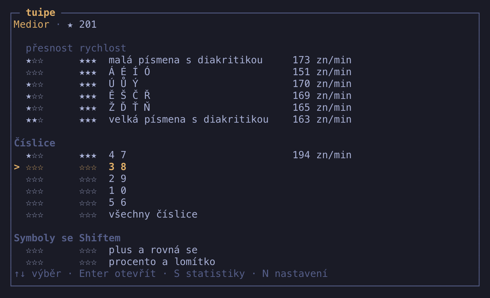
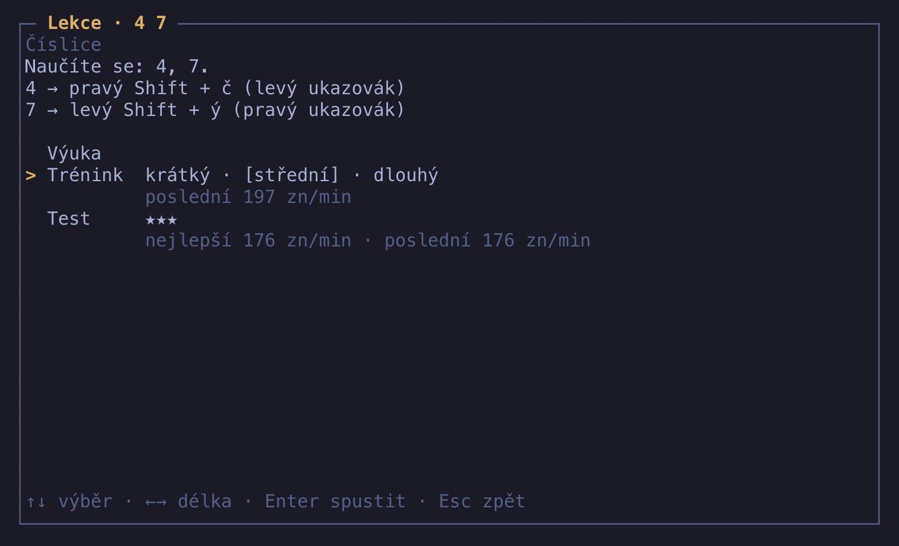
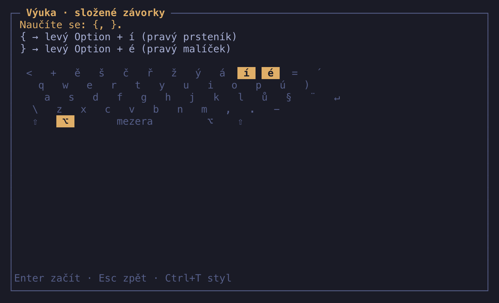
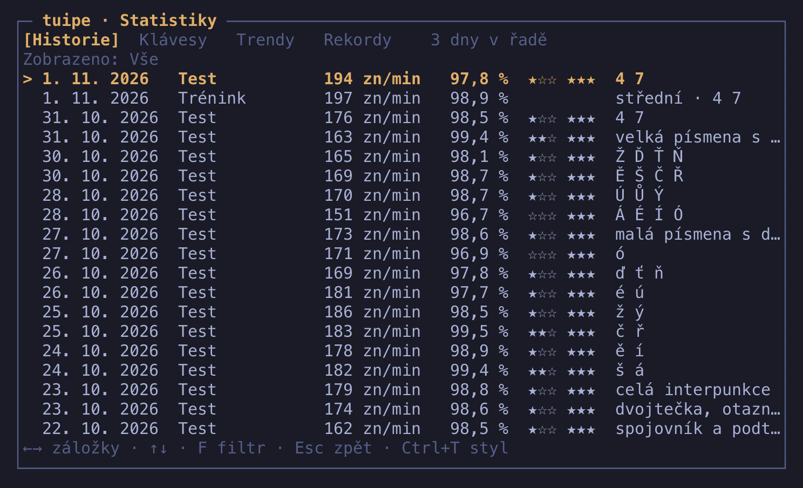

Manuál tuipe
tuipe je kurz psaní všemi deseti pro českou klávesnici QWERTY, který vede až k symbolům a ke kódu. Běží v terminálu a nejvíc času věnuje tomu, co ostatní kurzy přeskakují: číslicím, symbolům a mrtvým klávesám.
Spustíte ho, stisknete Enter a pokračujete další lekcí. Každá lekce vás nejdřív naučí (Výuka), pak procvičí (Trénink) a nakonec změří (Test). Všechny lekce jsou otevřené, žádná není zamčená. tuipe nic neukládá online: žádné účty, žádná telemetrie.
Instalace
Instalace je jeden příkaz. Zkopírujte ho, vložte do terminálu a potvrďte.
macOS a Linux
curl -fsSL https://raw.githubusercontent.com/jiripisa/tuipe/main/install.sh | sh Skript vybere vydání pro váš systém a architekturu (arm64 nebo amd64), ověří kontrolní součet SHA-256 a uloží program do ~/.local/bin. Nepotřebuje sudo. Když tato složka není na PATH, vypíše přesně ten řádek, který máte přidat do ~/.zshrc nebo jiného souboru vašeho shellu. Pak otevřete nový terminál.
Windows
V PowerShellu 5.1 nebo novějším:
irm https://raw.githubusercontent.com/jiripisa/tuipe/main/install.ps1 | iex Program skončí v %LOCALAPPDATA%\tuipe\bin a skript tu složku sám přidá do vaší uživatelské PATH. V aktuálním okně funguje hned, další terminály ji uvidí po otevření.
Jiná složka
Instalační skripty čtou proměnnou TUIPE_INSTALL_DIR. Na macOS a Linuxu ji nastavíte přímo před sh, tedy … | TUIPE_INSTALL_DIR=/kam/chcete sh.
Go
go install github.com/jiripisa/tuipe/cmd/tuipe@latest Takto nainstalovaný program se aktualizuje znovu stejným příkazem, ne přes tuipe upgrade.
Linux a Windows. První verze je vyladěná na macOS. Pro Linux a Windows jsou binárky hotové, ale vlastní rozložení klávesnice zatím nemají. Aplikace to při prvním spuštění řekne, ukáže složku pro vlastní soubor rozložení a nechá vás pokračovat s rozložením z macOS. Kontrola kláves se pak přeskočí a nápovědy popisují klávesy z macOS, které u vás mohou ležet jinde. Jak přidat rozložení, popisuje docs/layouts.md.
Nastavení klávesy Option
Na české klávesnici v macOS se {, @ a většina programátorských symbolů píše s klávesou Option. Některé terminály ale Option používají jako Meta nebo Alt, a pak znak nikdy nedorazí. Při prvním spuštění to tuipe pozná a ukáže návod pro váš terminál. Tady je totéž pohromadě.
| Terminál | Co nastavit |
|---|---|
| Terminal.app | Nastavení › Profily › Klávesnice, vypněte volbu Use Option as Meta key |
| iTerm2 | Settings › Profiles › Keys › General, nastavte obě klávesy Option: Left Option key = Normal a Right Option key = Normal. Na pravé záleží, znak @ se píše právě jí. |
| Ghostty | Do konfigurace přidejte macos-option-as-alt = false |
| kitty | Do kitty.conf přidejte macos_option_as_alt no |
| WezTerm | Do wezterm.lua přidejte config. |
| Alacritty | Do alacritty.toml, sekce [window], přidejte option_as_alt = "None" |
Po změně terminál znovu načtěte nebo restartujte. V jiném terminálu hledejte volbu, která se anglicky jmenuje „Option as Meta“ nebo „Option as Alt“, a vypněte ji.
První spuštění
Napište tuipe. Při prvním spuštění vás tuipe provede několika kroky. Příště už se na ně neptá.
Vzhled
Šipkami vyberete jeden ze tří stylů a rovnou vidíte, jak vypadá skutečné kolo. Enter výběr potvrdí. Není to napořád, styl přepnete kdykoli klávesou Ctrl+T.

Kontrola klávesnice
tuipe vás požádá o tři znaky: ě, { a @. Ke každému ukáže, jak se píše. Podle výsledku pozná, co se děje:
- Když první znak nesedí, tuipe vás upozorní a ukáže, co přišlo. Může to být překlep, takže znak prostě napište znovu. Pokud klávesa opravdu dává tohle, potvrďte to klávesou Enter a otevře se výběr rozložení.
- Když terminál pošle Alt s písmenem, ukáže se návod na nastavení Option. Po změně zkusíte znak znovu klávesou Enter.
- Když nesedí
{nebo@, nevadí to. Tyto klávesy se učí později.
Kontrolu přeskočíte klávesou Esc, jiné rozložení vyberete klávesou Tab.
Kde začínáte?
Dvě možnosti. Začínám od nuly ukáže domovskou pozici rukou a pustí vás na seznam lekcí u první lekce. Vstupní test trvá asi 4 minuty a doporučí lekci, od které začít.
Vstupní test
Test má šest fází. V každé napíšete krátký text bez nápovědy. Fáze je splněná při přesnosti aspoň 90 % a rychlosti z tabulky. Nesplněná fáze test ukončí a nic zlého se neděje.
| Fáze | Rychlost | Splnění přeskočí kapitoly |
|---|---|---|
| Písmena | 100 zn/min | Domovská řada, Horní řada, Dolní řada, Velká písmena a interpunkce |
| Diakritika | 75 zn/min | Česká diakritika |
| Číslice | 60 zn/min | Číslice |
| Symboly se Shiftem | 60 zn/min | Symboly se Shiftem |
| Symboly s Option | 50 zn/min | Symboly I, Symboly II, Vzácné a mrtvé klávesy |
| Skutečný kód | 60 zn/min | Skutečný kód, Všechno dohromady |
Fáze skončí i předčasně, když po nejméně 20 stiscích tvoří chyby přes čtvrtinu. Test ukončíte sami klávesou Esc před každou fází.
Výsledek je jedna věc: doporučená lekce, tedy první lekce první kapitoly, kterou jste nesplnili. Lekce v seznamu dostane značku doporučeno, dokud její Test nedá hvězdu. Vstupní test nedává hvězdy ani hodnost a nic nezamyká: všechny lekce zůstávají otevřené a můžete začít kdekoli.

Test můžete zopakovat v Nastavení položkou Znovu vstupní test. Změní jen doporučenou lekci, hvězdy zůstanou.
Lekce
Kurz tvoří 12 kapitol a v nich krátké lekce, obvykle o jednom páru kláves: Domovská řada, Horní řada, Dolní řada, Velká písmena a interpunkce, Česká diakritika, Číslice, Symboly se Shiftem, Symboly I, Symboly II, Vzácné a mrtvé klávesy, Skutečný kód (Go, Python, JavaScript, TypeScript, shell, SQL a regulární výrazy) a Všechno dohromady. Kapitola je jen nadpis v seznamu.
Seznam lekcí
Po spuštění se otevře seznam lekcí a kurzor stojí na další lekci, která ještě nemá hvězdu. Když jste dělali vstupní test, počítá se od doporučené lekce. Enter tedy znamená pokračovat.

Nahoře vidíte svou hodnost a počet hvězd. U každé lekce jsou její hvězdy a rychlost Testu, který je získal. Když je získal jen Test s pauzou, rychlost se u lekce neukáže. Lekce, u které jste dokončili Výuku nebo odehráli kolo, ale nemá hvězdu, má poznámku rozpracováno. Kurzor pohybujete šipkami, Enter lekci otevře, S ukáže statistiky a N nastavení.
Když vaše rozložení klávesnice neumí napsat některé znaky, tuipe jednou řekne, kolik lekcí přeskočil. Ostatní lekce fungují dál a Test nikdy nechce znak, který rozložení neumí.
Uvnitř lekce
Obrazovka lekce říká, co se učíte, a u každého znaku, jak se píše a kterým prstem. Berou se z rozložení, které používáte. U lekcí, které nic nového neučí, stojí skupina znaků, u kódu jazyk. Pod tím jsou tři části: Výuka, Trénink a Test.

Šipky nahoru a dolů vybírají část, Enter ji spustí, Esc vás vrátí do seznamu. Na řádku Trénink vybíráte délku šipkami doleva a doprava. U Tréninku vidíte poslední výsledek vybrané délky, u Testu nejlepší a poslední.
Výuka
Výuka vás lekcí provede. Nic se v ní neměří, nepočítá se do statistik a nezapíše se jako kolo. Když ji dokončíte, u lekce svítí ✓ hotovo. Když ji opustíte klávesou Esc, žádná značka se nenastaví.

- Nejdřív krátký text: co se učíte a jak. Řekne ruku a prst každé klávesy a u znaku s Option, Shiftem nebo mrtvou klávesou i to, kterou klávesu stisknout první. Začíná levou rukou. Enter začne psát.
- Přes všechny kroky je vidět klávesnice se zvýrazněnými klávesami lekce.
- Pak píšete řádky: každý znak lekce sám, potom dvojice střídavě, nakonec jeden řádek ze slov. Špatná klávesa kurzor neposune.
Lekce, které nic nového neučí, mají krátký text a jeden řádek. Lekce kódu mají krátký text o tom, na co si u jazyka dát pozor, a jeden úryvek.
Trénink
Trénink je kolo zaměřené na znaky lekce. Dřívější znaky se objeví jen jako podpora. Hvězdy ani hodnost za něj nedostanete a nic se nehodnotí, ale každé kolo se uloží a ukáže jako poslední výsledek lekce.
- Délky jsou krátký, střední a dlouhý, zhruba 30, 60 a 120 sekund v tempu, které lekce chce na dvě hvězdy. U lekcí kódu je to jeden, dva nebo tři úryvky.
- Text je při každém spuštění nový.
- Nápověda se ukazuje podle toho, jak dobře znak umíte, viz nápověda.
- Výsledek ukáže rychlost, přesnost, čas, znaky s nejvíc chybami a tabulku, kde vedle sebe stojí teď, minule a nejlepší Trénink stejné délky. Pod každým číslem je šipka: zelená ▲ znamená, že jste teď lepší, červená ▼ horší. Nahoře jedna věta řekne, jestli jste byli rychlejší než minule, nebo překonali rekord. Enter vás vrátí do lekce, R pustí Trénink znovu na novém textu.


Test
Test je kolo ze všeho, co se učilo od začátku kurzu až po tuto lekci, s důrazem na znaky této lekce, takže jde zvládnout jen s nimi. Když otevřete lekci mimo pořadí, Test i tak obsahuje dřívější znaky. Je to záměr.
- Délka je zhruba 90 sekund v tempu na dvě hvězdy. Text je pokaždé nový, nejde se ho naučit nazpaměť.
- Bez nápovědy. V Testu se nápověda nikdy neukáže.
- Kód. Test lekce kódu jsou tři náhodné úryvky z jejího jazyka. Každý jazyk se testuje sám.
- Hvězdy a hodnost dává jen Test, viz Hvězdy a hodnost.

Na výsledku Testu přibývá řádek Hvězdy. Když kolo nedosáhlo ani první, stojí u něj bez hvězdy. Když Test povýší hodnost, napíše to: Nová hodnost: Medior. Enter a Esc vás vrátí do lekce, R pustí Test znovu na novém textu.
Hvězdy a hodnost
Každá lekce má tři hvězdy a získáte je jen v Testu. Každá hvězda chce rychlost i přesnost zároveň:
| Hvězda | Přesnost | Rychlost |
|---|---|---|
| ★ | aspoň 92 % | první cíl lekce |
| ★★ | aspoň 96 % | druhý cíl lekce |
| ★★★ | aspoň 98 % | třetí cíl lekce |
Cíle rychlosti se liší podle lekce, protože lekci symbolů nejde měřit jako lekci písmen. První lekce, f j, chce 30, 45 a 60 zn/min, lekce d k 50, 75 a 100 zn/min. U lekce se pamatuje nejlepší výsledek, takže hvězdu nikdy neztratíte.
Hodnost vychází z hvězd ze všech Testů, jako podíl všech hvězd, které kurz nabízí:
| Hodnost | Podíl hvězd |
|---|---|
| Intern | od začátku |
| Junior | od 10 % |
| Medior | od 30 % |
| Senior | od 55 % |
| Staff | od 80 % |
| Principal | od 95 % |
Vidíte ji nahoře v seznamu lekcí. Hodnost nezávisí na rozložení klávesnice a hvězdy se neodebírají.
Rychlost a přesnost
- Rychlost je počet správně napsaných znaků za minutu,
zn/min. Slovo se počítá za pět znaků. - Přesnost je podíl znaků napsaných správně napoprvé.
- Nejlepší výsledek Testu je ten s nejvíc hvězdami, takže rychlost u lekce v seznamu patří k jejím hvězdám. Mezi Testy se stejným počtem hvězd a u Tréninku, který hvězdy nedává, rozhoduje skóre, tedy rychlost krát přesnost na čtvrtou. Přesnost v něm váží mnohem víc než rychlost a rychlé, odbyté kolo nejlepším výsledkem nebude.
Jak funguje kolo
Trénink, Test i vstupní test jsou kola: jeden napsaný text. Platí v nich tato pravidla.
Zastavení na chybě
Při špatné klávese se kurzor nepohne, dokud nenapíšete správný znak. Chyba se zapíše, znak zčervená a podtržení na něm zůstane. Backspace není potřeba a nic nedělá. Odnaučíte se tak opravovat a naučíte se rovnou trefovat.
Enter a odsazení
Konec řádku značí symbol ↵ a píše se klávesou Enter. Odsazení dalšího řádku tuipe přeskočí samo, jako by to udělal editor, takže mezery na začátku řádku nepíšete.
Čas a pauza
Čas běží od prvního stisku. Kolo se pozastaví samo, když okno terminálu ztratí fokus. V terminálech, které změnu fokusu nehlásí, se kolo pozastaví po 5 sekundách bez stisku. Takovou pauzu ukončí první další klávesa, která se zároveň počítá jako vstup.
Klávesa Esc otevře nabídku pauzy s položkami pokračovat, začít znovu a odejít. Ctrl+R začne kolo znovu rovnou. Čas pauzy se nikdy nezapočítá. Kolo s pauzou se dopíše normálně a počítá se do statistik, jen se nepočítá jako nejlepší výsledek ani rekord a výsledek to řekne: pauza: kolo se nepočítá jako rekord.
Nedopsané kolo není prohra: odejdete-li z něj nebo ho začnete znovu, do historie se nic nezapíše a nedostanete hvězdy, ale stisky z něj se do statistik znaků počítají.
Nápověda a jak mizí
Nápověda říká, co stisknout a kterým prstem. Ukazuje se v Tréninku, v Testu nikdy. Třeba:
{ → levý Option + í (pravý prsteník)
Kdy se ukáže, záleží na tom, jak dobře znak umíte. tuipe si u každého znaku vede rychlost a chybovost a podle nich ho řadí do čtyř stavů:
| Stav znaku | Jak se ho dosáhne | Nápověda |
|---|---|---|
| nový | méně než 10 stisků | hned |
| rozpracovaný | aspoň 10 stisků | po 0,8 s váhání |
| jistý | aspoň 30 stisků, chybovost pod 6 %, prodleva pod 600 ms | po 2 s váhání |
| automatický | aspoň 80 stisků, chybovost pod 2 %, prodleva pod 350 ms | ani při váhání ne |
Od stavu rozpracovaný výš se nápověda ukáže i při druhé chybě na stejném místě, nikdy při první. Výš se znak posune, jen když chybovost nepřesáhne 12 %. Může se i zhoršit: klesne, když chybovost přeroste 12 %, ale nejvýš o stupeň za kolo, a jeden překlep na znaku, který píšete poprvé, ho neshodí. Znak, který jste dva týdny nepsali, se pro nápovědu čte o stupeň níž, za každé další dva týdny o další.
Mapa klávesnice a panel Další znak jsou také nápověda a řídí se stejnými pravidly. Mimo nápovědu jsou tyto plochy prázdné nebo ukazují neutrální přehled, takže neprozradí, co přijde.
Statistiky
Otevřete je klávesou S v seznamu lekcí. Čtyři záložky přepínáte šipkami vlevo a vpravo, nebo klávesou Tab dopředu a Shift+Tab zpět. Nahoře je vždy počet dní v řadě, kdy jste psali.
Každá část čte jiná kola:
| Co | Test | Trénink | Výuka |
|---|---|---|---|
| Hvězdy a hodnost | ano | ne | ne |
| Trendy a rekordy | ano | ne | ne |
| Slabé znaky a mapa klávesnice | ano | ano | ne |
| Dny v řadě | ano | ano | ne |
| Historie | ano | ano | ne |
Historie
Každé dokončené kolo je jeden řádek, nejnovější nahoře: den, jestli šlo o Test, Trénink nebo Vstupní test, rychlost, přesnost, hvězdy a lekce, u Tréninku i délka. Klávesa F mění, co se ukazuje: Vše, jen Trénink, nebo jen Test.

Klávesy
Klávesnice obarvená podle slabosti: čím červenější klávesa, tím hůř. Slabost kombinuje chybovost a prodlevu a počítá se u znaků s aspoň 5 stisky. Pod mapou je nejslabší prst a nejslabší znaky i s tím, jak se píšou.

Trendy
Rychlost a přesnost v čase jako malé grafy, jeden sloupek za den, kdy jste dělali Test, nejvýš za posledních 30 takových dní. Za každý den se bere medián. Řádek celkem obsahuje všechny Testy. Skupiny písmena, diakritika, čísla, Shift, Option a kód se berou podle kapitoly, do které lekce Testu patří. Do skupiny kód patří kapitoly Skutečný kód a Všechno dohromady. Číslo vpravo je poslední hodnota, pomlčka znamená, že zatím není z čeho.

Rekordy
Tři řádky: nejvyšší rychlost v Testu, nejlepší přesnost v Testu a nejvíc dní v řadě. Kola s pauzou se do rekordů nepočítají.

Dny v řadě
Den se počítá, když v něm dokončíte aspoň jeden Test nebo Trénink. Výuka a Vstupní test se nepočítají. Vynechaný den sérii přeruší. Dnešek, dokud jste nepsali, sérii nepřeruší, jen se zatím nepočítá.
Vzhled a velikost okna
Kolo má ve třech stylech opravdu tři různá rozložení. Ostatní obrazovky mají stejnou strukturu, jen se barvami a rámečky přizpůsobí stylu. Výchozí je Editor. Ctrl+T přepíná v pořadí Fosfor, Editor, Velín a funguje kdykoli, i uprostřed kola. Volba se hned uloží.
- Fosfor je monochromatický zelený monitor. Řádek, který píšete, stojí na místě a text se pod ním posouvá. Pod textem jsou rychlost, přesnost a série. Mapa klávesnice se ukáže jen při nápovědě.
- Editor vypadá jako Neovim: zvýraznění syntaxe, čísla řádků, stavový řádek a dole přehled, který při nápovědě vystřídá mapa klávesnice.
- Velín je hustý dashboard ve stylu
htop: postup, rychlost, statistika, přehled a panel Další znak.
Ideální okno je polovina obrazovky vedle jiné práce, kolem 80 × 45, stejně dobře ale poslouží běžných 80 × 24.
| Velikost okna | Co uvidíte |
|---|---|
| od 60 × 18 | plné rozložení stylu |
| menší | kolo se zúží na pruh: hlavní čísla, text a jednořádková nápověda bez mapy |
| pod 40 × 8 | kolo se pozastaví a tuipe požádá o víc místa |
Změna velikosti během kola nic nepokazí, text se jen přeskládá.
Klávesové zkratky
Během kola je každá tisknutelná klávesa vstup, proto se ovládání drží kláves Ctrl a Esc.
| Kde | Klávesa | Co udělá |
|---|---|---|
| Všude | Ctrl+T | další styl |
| Ctrl+C | konec aplikace | |
| První spuštění: styl a rozcestník „Kde začínáte?“ | ↑ ↓ nebo k j | výběr |
| Enter | potvrdit | |
| První spuštění: kontrola klávesnice | Tab | otevřít výběr rozložení |
| Enter | po špatném prvním znaku potvrdit, že ho klávesa opravdu dává | |
| Esc | kontrolu přeskočit | |
| První spuštění: nápověda k Option | Enter | zkusit znak znovu |
| Esc | kontrolu přeskočit | |
| První spuštění: výběr rozložení | ↑ ↓ nebo k j | výběr |
| Enter | potvrdit rozložení a zkontrolovat znovu | |
| Esc | kontrolu přeskočit | |
| První spuštění: domovská pozice | ↑ ↓, k j, PgUp PgDn | posun textu |
| Enter | pokračovat | |
| Seznam lekcí | ↑ ↓ nebo k j | výběr lekce |
| Enter | otevřít lekci | |
| S | statistiky | |
| N | nastavení | |
| Lekce | ↑ ↓ nebo k j | výběr: Výuka, Trénink, Test |
| ← → | délka Tréninku | |
| Enter | spustit vybranou část | |
| Esc | zpět do seznamu | |
| Výuka | Enter | začít psát po úvodním textu |
| Esc | zpět do lekce | |
| Kolo | Esc | pauza |
| Ctrl+R | začít kolo znovu | |
| Enter | konec řádku v textu | |
| Pauza | ↑ ↓, Enter | výběr a potvrzení |
| Esc | pokračovat | |
| Výsledek Tréninku a Testu | Enter nebo Esc | zpět do lekce |
| R | zopakovat na novém textu | |
| Vstupní test a jeho výsledek | Enter | začít fázi nebo pokračovat z výsledku |
| Esc | ukončit test (před fází) | |
| Statistiky | →, l nebo Tab | další záložka |
| ←, h nebo Shift+Tab | předchozí záložka | |
| ↑ ↓, k j, PgUp PgDn | posun v historii | |
| F | filtr historie: Vše, Trénink, Test | |
| Esc | zpět do seznamu | |
| Nastavení | ↑ ↓ nebo k j | výběr |
| Enter, ← → nebo h l | změnit hodnotu | |
| Esc | zpět do seznamu |
Česká klávesnice
Všechno v této kapitole platí pro rozložení macOS Czech QWERTY na fyzické klávesnici ISO. Ve vstupních zdrojích macOS se jmenuje Czech – QWERTY a v českém systému zřejmě Česká – QWERTY. Pokud takový název nenajdete, hledejte položku s dovětkem QWERTY. Na české klávesnici QWERTZ je část kláves jinde.
Horní řada je naruby
Číslice jsou za Shiftem: bez něj píšete + ě š č ř ž ý á í é, se Shiftem 1 2 3 4 5 6 7 8 9 0. Každé číslo v kódu tak stojí stisk navíc. Symboly s Option jsou ve stejné řadě: ` @ # $ ~ ^ & * { }.
Kterou rukou modifikátor
Shift nebo Option stiskne ruka, která nepíše samotnou klávesu. Proto nápověda říká levý Option + í: í je pod pravým prsteníkem, takže Option drží levá. tuipe to nevidí a poradit může jen nápovědou, ale s tímto návykem budete rychlejší.
Mrtvé klávesy
Mrtvá klávesa sama nic nenapíše. Čeká na další stisk a teprve spolu dají znak. Terminál přitom vidí jen výsledek, proto se čas znaku měří za celou sekvenci.
Hlavní mrtvá klávesa leží vpravo od =, na mapě klávesnice je jako ´. Bez Shiftu dává čárku, se Shiftem háček. Další je ¨ vpravo od §.
| Znak | Jak se píše |
|---|---|
ď | levý Shift + ´, pak d |
ť | levý Shift + ´, pak t |
ň | levý Shift + ´, pak n |
ó | ´, pak o |
Č | levý Shift + ´, pak pravý Shift + c |
Ů | levý Shift + ´, pak levý Shift + u |
Á | ´, pak pravý Shift + a |
ˇ | levý Shift + ´, pak mezera |
¨ | ¨, pak mezera |
° | levý Option + =, pak mezera |
Velká písmena s diakritikou se tedy píšou přes mrtvou klávesu, protože Shift na horní řadě dává číslice.
Kde co leží
ú/[jsou na klávese vpravo odp,)(]hned za ní.ů";jsou na klávese vpravo odl,§!'hned za ní.\a|jsou mezi levým Shiftem az.<a>se učí s Option na čárce a tečce, blízko domovské pozice.
Symboly v kódu
Tabulka ukazuje přesně to, co vám řekne nápověda v aplikaci, včetně prstu. Kde je jen znak, stačí jeho vlastní klávesa.
| Znak | Jak se píše | Prst |
|---|---|---|
{ | levý Option + í | pravý prsteník |
} | levý Option + é | pravý malíček |
[ | levý Option + ú | pravý malíček |
] | levý Option + ) | pravý malíček |
( | levý Shift + ) | pravý malíček |
) | ) | pravý malíček |
< | levý Option + , | pravý prostředník |
> | levý Option + . | pravý prsteník |
@ | pravý Option + ě | levý prsteník |
# | pravý Option + š | levý prostředník |
$ | pravý Option + č | levý ukazovák |
~ | pravý Option + ř | levý ukazovák |
^ | pravý Option + ž | levý ukazovák |
& | levý Option + ý | pravý ukazovák |
* | levý Option + á | pravý prostředník |
; | levý Option + ů | pravý malíček |
' | levý Option + § | pravý malíček |
" | levý Shift + ů | pravý malíček |
` | levý Shift + ¨ | pravý malíček |
\ | \ | levý malíček |
| | pravý Shift + \ | levý malíček |
/ | levý Shift + ú | pravý malíček |
% | levý Shift + = | pravý malíček |
+ | + | levý malíček |
= | = | pravý malíček |
- | - | pravý malíček |
_ | levý Shift + - | pravý malíček |
. | . | pravý prsteník |
, | , | pravý prostředník |
: | levý Shift + . | pravý prsteník |
? | levý Shift + , | pravý prostředník |
! | levý Shift + § | pravý malíček |
§ | § | pravý malíček |
Některé znaky jdou napsat i jinak a tuipe učí jen jednu cestu. Protože terminál vidí jen výsledek, během psaní platí i ty ostatní: < a se Shiftem > z klávesy vlevo od +, ' jako ´ a mezera, ` jako Option + +.
Data a konfigurace
Všechno leží u vás, v obyčejných souborech. tuipe nemá účty ani telemetrii. Na síť jde jen tuipe upgrade a denní kontrola nové verze.
| Soubor | Obsah |
|---|---|
~/.config/ | nastavení |
~/.config/ | vaše rozložení klávesnice |
~/.local/ | znalost znaků, hvězdy, značky Výuky, doporučená lekce |
~/.local/ | historie kol |
Na Windows jsou tyto složky ve vašem uživatelském adresáři, tedy %USERPROFILE%\.config\tuipe a %USERPROFILE%\.local\share\tuipe. Proměnné XDG_CONFIG_HOME a XDG_DATA_HOME platí na všech systémech. Zálohu uděláte zkopírováním složek.
Konfigurace má tři hodnoty a běžně ji měníte přímo v aplikaci, v Nastavení:
style = "editor"
layout = "macos-czech-qwerty"
update_check = truestyle může být fosfor, editor nebo velin. Statistiky se vedou zvlášť pro každé rozložení. Poškozený soubor aplikaci neshodí: tuipe ho odloží s koncovkou .corrupt-1, začne bez něj a řekne, co se stalo a kde odložený soubor leží. Řekne to v seznamu lekcí, a když kvůli tomu začínáte úvodním nastavením, už na jeho první obrazovce. Stejně naloží se soubory z verze 0.1.0, ta měla jiné uložení: odloží se s koncovkou .v1 a začínáte znovu. Hlášení zmizí po prvním stisku klávesy v seznamu lekcí. Když aplikaci zavřete dřív, než seznam uvidíte, řekne vám to při dalším spuštění znovu.
Aktualizace
tuipe upgradeStáhne nejnovější vydání z GitHubu, ověří kontrolní součet a vymění program. Když stažení nebo kontrola selže, nainstalovaná verze zůstane beze změny.
tuipe upgrade --checkJen zjistí, jestli je dostupná novější verze, a nic nemění. Nainstalovanou verzi vypíše tuipe version.
Na novou verzi vás upozorní i tichý řádek v seznamu lekcí. Kontrola běží nejvýš jednou denně na pozadí a start ani psaní nezdržuje. Vypnete ji v Nastavení položkou Kontrola aktualizací. Program z go install se tímto příkazem aktualizovat nedá, napíše vám, ať go install spustíte znovu.
Začít znovu
Příkaz tuipe reset vrátí aplikaci do výchozího stavu. Vždy musíte říct, co se má smazat:
| Příkaz | Co smaže |
|---|---|
tuipe reset --score | znalost znaků, hvězdy, značky Výuky, doporučenou lekci a historii kol |
tuipe reset --settings | nastavení a vaše rozložení klávesnice |
tuipe reset --all | obojí, jako by tuipe běžel poprvé |
Příkaz nejdřív vypíše, co přesně smaže, a zeptá se, jestli si jste jistí. Smaže to, až když napíšete ano a stisknete Enter. Jiná odpověď nic nezmění. Smazaná data nejde vrátit. Když tuipe běží v jiném okně, příkaz odmítne, dokud ho nezavřete. Ostatních souborů ve složkách si nevšímá.
Odinstalace
Na macOS a Linuxu smažte program a pak, pokud chcete, i data:
rm ~/.local/bin/tuipe
rm -rf ~/.config/tuipe ~/.local/share/tuipeNa Windows v PowerShellu:
Remove-Item -Recurse -Force "$env:LOCALAPPDATA\tuipe"
Remove-Item -Recurse -Force "$HOME\.config\tuipe", "$HOME\.local\share\tuipe"Složku %LOCALAPPDATA%\tuipe\bin pak ještě odeberte z uživatelské proměnné Path v nastavení proměnných prostředí. Pokud jste instalovali jinam nebo přes go install, smažte program tam.
Časté potíže
- Nejde napsat { ani jiné znaky s Option
- Když tuipe během kola napíše
Option je Alta volbu vašeho terminálu, třebaOption je Alt, nastavte: macos-option-as-alt = false, terminál posílá Alt místo znaku. Pomůže nastavení Option. Po změně terminál restartujte. - Místo { se píše něco jiného
- Zkontrolujte, že je v macOS aktivní vstupní zdroj
Czech – QWERTY(v českém systému zřejměČeská – QWERTY), ne varianta bez QWERTY, která je QWERTZ. tuipe vstupní zdroj nepřepíná a v základu zná jen rozložení Czech QWERTY. - { jde, ale @ ne (iTerm2)
- Levý a pravý Option se v iTerm2 nastavují zvlášť a
@se píše pravým. NastavteRight Option key = Normal. - Stisknu ´ a nic se nestane
- To je správně, je to mrtvá klávesa. Znak vznikne až po dalším stisku.
- Po instalaci command not found: tuipe
- Složka
~/.local/binnení naPATH. Instalační skript vypsal řádek, který máte přidat do souboru svého shellu. Pro zsh patří do~/.zshrctento řádek:export PATH="$HOME/.local/bin:$PATH". Pak otevřete nový terminál. - tuipe už běží v jiném okně
- tuipe drží zámek na svá data, aby se dvě kopie nepoškodily. Zavřete druhé okno a zkuste to znovu.
- Data uložila novější verze tuipe
- Data jsou z novější verze než program. Spusťte
tuipe upgrade. - Potřebuji víc místa
- Okno je menší než 40 × 8. Zvětšete ho, kolo mezitím čeká.
- Proč nemám třetí hvězdu?
- Třetí hvězda chce přesnost aspoň 98 % a třetí cíl rychlosti lekce. Hvězdy dává jen Test, Trénink ne.
- Kolo se samo pozastavilo
- Okno ztratilo fokus. Stačí se vrátit a stisknout další klávesu. Čas pauzy se nepočítá, jen se kolo nepočítá jako nejlepší výsledek ani rekord.
- Zmizela mi stará data
- Soubory z verze 0.1.0 má nová verze v jiném formátu. Odložila je s koncovkou
.v1vedle původních a při prvním spuštění vám to řekla. Začínáte znovu. - Upgrade říká, že kopie nebyla nainstalována z vydání
- Program pochází z
go install. Aktualizujte ho znovu tímtéž příkazem, nebo použijte instalační skript. - Windows: Nepodařilo se nainstalovat
- Zavřete spuštěný tuipe a pusťte instalaci znovu.